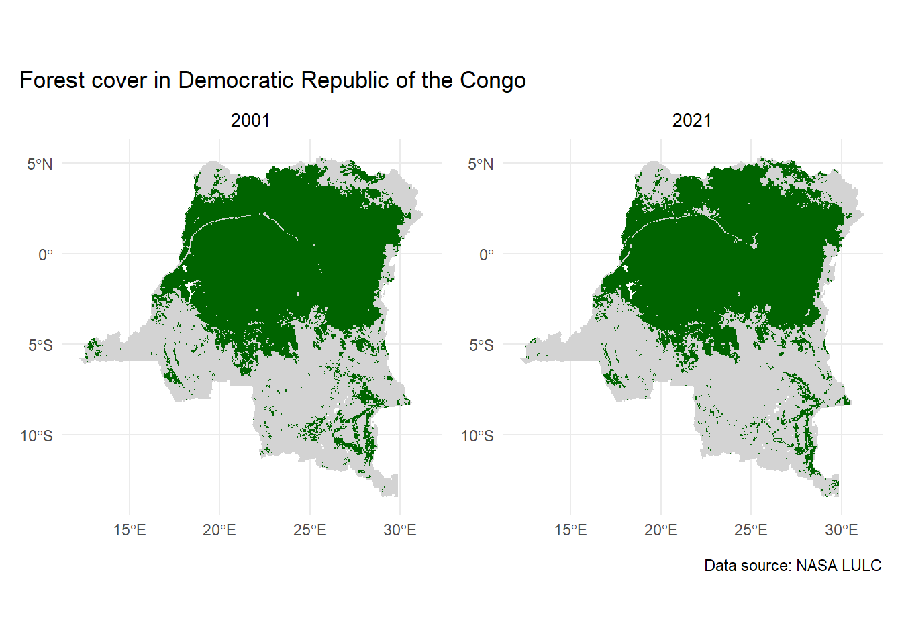
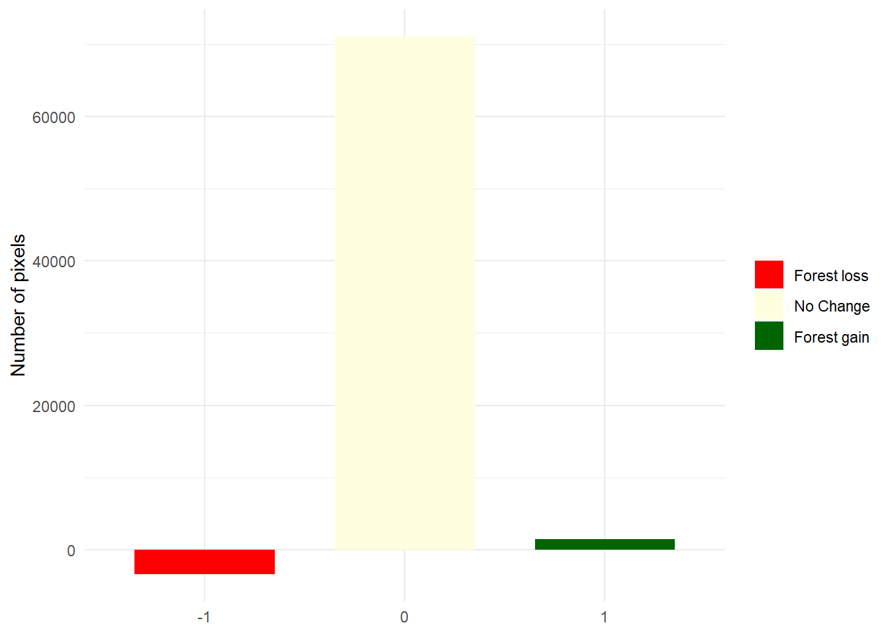
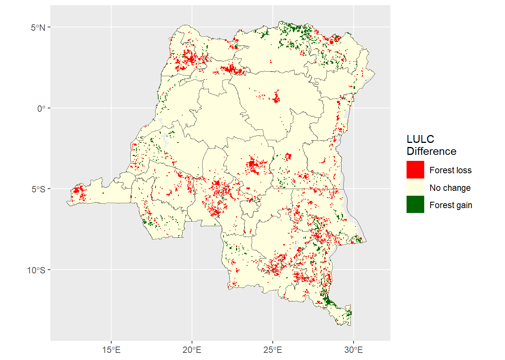
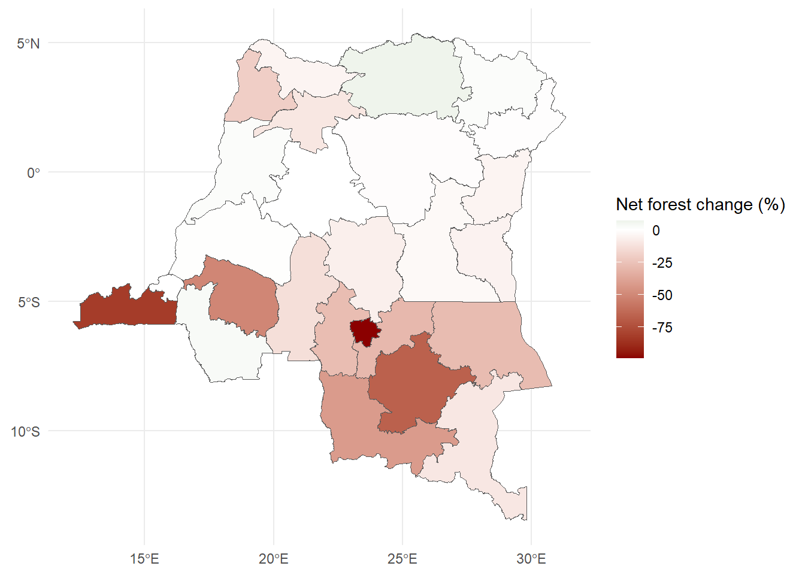

Introduction on using remotely sensed data to measure deforestation
Author
Affiliation
Devon Kristiansen
IPUMS Global Health Research Manager
If you read our three-part series on remotely-sensed vegetative indices and land cover data, you might be wondering, what’s next? One application is to measure long term change in forest cover over certain areas.
Background
First let’s start with a few definitions. Tree cover loss is the “complete removal of tree cover for any reason”, whereas deforestation is the permanent removal of natural forest cover by humans1. Tree cover loss could be caused by wildfires, storm damage, pests, or other factors, and can also include the removal of non-natural tree cover (e.g. logging in forests planted specifically for production). Deforestation is only a part of tree cover loss. Canopy density is a measure of the proportion of land is covered by the leafy canopy of trees. Even when land is still classified as forest, a reduction of canopy density is a form of tree cover loss.
In 2000, 4 billion hectares of the world’s surface was forest, covering 30% of all land. According to Global Forest watch, between 2001 and 2025, a net 100 million hectares (2.4%) of tree cover was lost1.
Loss or disturbance of forests can contribute to a variety to human health impacts.
Degradation of forests can lead to short term increase of malaria incidence, as mosquito habitat is disrupted. New pathogens could from wildlife to humans after ecological disturbance.2
Forests contribute to food security and diet diversity in subsistence settings3,4
As forests are burned to clear the way for crop cultivation, air quality worsens and lead to respiratory diseases and mortality5
Forests help with temperature regulation, especially in urban areas6,7
Significant loss of forests, especially in tropical areas, interfere with precipitation cycles8
Measurement
Prior to the use of remotely sensed spatial data on forest cover, the FAO created reports every 5 years on global forest cover, drawing from national inventories9. However, this method combined forest cover measures using different methodologies.
Starting in the 2000s, satellite imagery became a far more feasible, comparable, and accurate way of measuring global forest cover. Remotely sensed data to measure tree cover include optical and radar data.
Optical data uses reflectance to assess land cover, such as measuring the amount of red, infrared or near infrared light reflected off the surface of the earth to approximate the area’s greenness. As forest cover is degraded or removed, reflectance will show reduced greenness. Because this type of measurement is an index, not a binary, vegetative indices describe density of forest cover.9 Sources of optical data include Landsat, AVHRR, MODIS, VIIRS, and Sentinel. (See our post on vegetative indices for more details).
A limitation of optical data is the presence of cloud cover, especially in wet, tropical regions of the world. Radar uses long wavelengths to penetrate tree canopies and measure the density of canopy structure. However, radar data must be used in combination with optical data and be preprocessed to account for noise. A notable forest cover data product derived from radar imagery, ALOS/PALSAR, comes from Japan’s space agency JAXA.9
Global Forest Watch
An organization called Global Forest Watch uses numerous data sources and advanced methodology to monitor tree cover loss and deforestation around the world. In collaboration with the University of Maryland’s GLAD lab, they use Landsat 5, 7, and 8, as well as application of algorithms based on training data10. They measure loss of tree cover for trees higher than five meters and consider areas as forested if trees comprise 30% or more of the ground cover.
Case study - Democratic Republic of the Congo
For social science researchers hoping to use forest cover or forest change as a mechanism to understand health outcomes, these complex methodologies may seem out of reach. However, if you can understand the assumptions made and the differences between data layers, land or forest cover data can still be used to inform your analyses. As a simple case study, we’ll look at the net forest cover change in the Democratic Republic of the Congo (DRC). As of 2010, the DRC ranked fifth in terms of total forest area. Two-thirds of its land area is forest, but significant forest loss has occurred over the past 25 years, with a majority of the disturbance of forested areas caused by shifting cultivation (small-scale, temporary clearing for farming) or permanent removal of forest for agriculture.1
Land Use/Land Cover data
A logical first step in measuring change in forest cover over time would be to compare the total land area categorized as forest in Land Cover/Land Use (LULC) data. We will demonstrate a bi-temporal (comparing the state of forest cover in two snapshots in time). First, we bring in the libraries we need and vector shapefiles for the DRC.
Code
# Load libraries library(terra)library(tidyr)library(stringr)library(sf)library(ggplot2)library(ggspatial)library(RColorBrewer)library(scales)library(dplyr)library(gt)# Read in shapefiles with 1st level administrative boundariesdrc_internal_borders <-read_sf("data/COD_admbnda_adm1_20170407.shp") |>st_make_valid()
Next, I’ll read in data from NASA’s LULC product (MCD12C1).
I chose to use MCD12C1 because:
the MODIS time series covers the full time frame of interest from 2001 to 2021
the resolution of 0.05 degrees is fine enough to capture changes over time on a country-level basis but coarse enough to be manipulated without too much demand on processing power
# Read in majority land cover type for 2001 and 2021 (first layer)land_majority_lulc_2001 <-sds("data/lulc/2001/MCD12C1.A2001001.061.2022146170409.hdf")[1]land_majority_lulc_2021 <-sds("data/lulc/2021/MCD12C1.A2021001.061.2022217040006.hdf")[1]# Get CRS of TIF filelulc_2001_crs <-crs(land_majority_lulc_2001)lulc_2021_crs <-crs(land_majority_lulc_2021)# Convert vector data to raster CRSdrc_internal_borders <-st_transform(drc_internal_borders, crs = lulc_2001_crs)drc_borders_vector <-vect(drc_internal_borders)
Preparing the land use data
We want to create a raster with recoded values such that the pixel is a 1 if the majority land cover of the pixel is forest, or codes 1 through 5 (See table 1 below). Codes 6 through 255 represent land cover such as savanna, croplands, built up areas, etc. that are not forest, so we will recode these to zero. For the full list of codes, see Table 3 in the MCD12Q1 User Guide. We also want to crop and mask the raster data to only pixels within the borders of the DRC to keep the raster’s size more manageable.
Table 1: MCD12C1 land cover code classification scheme
Name
Value
Description
Evergreen Needleleaf Forests
1
Dominated by evergreen conifer trees (canopy >2m). Tree cover >60%.
Evergreen Broadleaf Forests
2
Dominated by evergreen broadleaf and palmate trees (canopy >2m). Tree cover >60%.
Deciduous Needleleaf Forests
3
Dominated by deciduous needleleaf (larch) trees (canopy >2m). Tree cover >60%.
Deciduous Broadleaf Forests
4
Dominated by deciduous broadleaf trees (canopy>2m). Tree cover >60%.
Mixed Forests
5
Dominated by neither deciduous nor evergreen (40-60% of each) tree type (canopy >2m). Tree cover >60%.
Because we want to conduct the same manipulations to the land cover data files from both 2001 and 2021, let’s create a function. This way, we reduce the likelihood of errors and keep our code tidier.
We’ll write the function so that its two arguments are a raster dataset (land cover), then a vector dataset (country borders).
# Create function that crops the land use raster and recode the land cover datacrop_mask_recode <-function(land_raster,border_data) { land_raster_cropped <-crop(land_raster, border_data) land_raster_masked <-mask(land_raster_cropped, border_data)#Values of 0 indicate water - set to NA land_raster_masked[land_raster_masked ==0] <-NA#Combine categories 1 to 5 into 1, all else zero modified_raster <- land_raster_masked modified_raster[modified_raster >=1& modified_raster <=5] <-1 modified_raster[modified_raster >5] <-0return(modified_raster)}# Apply the function above to LULC data from 2001 and 2021forest_2001 <-crop_mask_recode(land_majority_lulc_2001,drc_borders_vector)forest_2021 <-crop_mask_recode(land_majority_lulc_2021,drc_borders_vector)
Mapping forest extent
We’ll use the ggplot2 library to visualize the forest extent rasters we’ve just created for 2001 and 2021
Code
# Mapping forest cover in DRC in 2001forest_2001_factor <-as.factor(forest_2001)forest_2001_map <-ggplot() +layer_spatial(forest_2001_factor) +scale_fill_manual(values =c("0"="lightgray","1"="darkgreen" ),na.value ="transparent",na.translate =FALSE,guide ="none" ) +theme_minimal() +labs(title ="2001")+theme(plot.title =element_text(hjust =0.5, size =10))# Mapping forest cover in DRC in 2021forest_2021_factor <-as.factor(forest_2021)forest_2021_map <-ggplot() +layer_spatial(forest_2021_factor) +scale_fill_manual(values =c("0"="lightgray","1"="darkgreen" ),na.value ="transparent",na.translate =FALSE,guide ="none" ) +theme_minimal() +labs(title ="2021") +theme(plot.title =element_text(hjust =0.5, size =10)) # Display the maps side by sidelibrary(patchwork)combined_maps <- forest_2001_map + forest_2021_map combined_maps +plot_annotation(title ="Forest cover in Democratic Republic of the Congo", caption ="Data source: NASA LULC")

A brief comparison of the maps side by side reveal what appears to be loss of forest, particularly along the Congo River in north-central DRC.
Calculating net difference in forest
We’ll subtract the 2001 forest binary raster from the 2021 forest raster to get a very basic measure of net forest cover change between these two time periods.
# Take the difference of the binary forest rasterslulc_difference <- forest_2021 - forest_2001# Turn the pixel difference values into a vectorlulc_difference_values <-as.data.frame(lulc_difference, na.rm =TRUE)# Rename column to diff for ease of referencecolnames(lulc_difference_values) <-"diff"
Pixels with a value of 1 mean that the pixel was not forest in 2001, but forest in 2021. If the pixel’s value is -1, the pixel was a forest in 2001, but was not by 2021. If the value is zero, either it remained a forest or not a forest in both years.
Summarizing the difference
To visualize our difference raster, we can use a diverging bar chart. We’ll create a dataframe that contains a column of all the pixel values without any spatial metadata within it (the object freqs). The majority of pixels did not change, at least between forest and non-forest. We of course would not be able to capture land use change between different types of non-forest land cover.
Code
# Create a new dataframe with a count of pixels for each difference valuefreqs <- lulc_difference_values %>%count(diff)# Because we want to present forest loss as a negative, we turn the count of -1s into a negative numberfreqs <- freqs %>%mutate(plot_n =ifelse(diff ==-1, -n, n) )# Plot frequency of pixels in a diverging bar chartggplot(freqs,aes(x =factor(diff, levels =c(-1, 0, 1)),y = plot_n,fill =factor(diff))) +geom_col(width =0.7) +scale_fill_manual(values =c("-1"="red","0"="lightyellow","1"="darkgreen" ),labels =c("-1"="Forest loss","0"="No Change","1"="Forest gain" ) ) +scale_y_continuous(labels = abs) +labs(x =NULL,y ="Number of pixels",fill =NULL ) +theme_minimal()

Next, we’ll visualize the net change in forest cover spatially, by mapping our difference raster. The raster value is currently stored as a continous numeric variable, and to map it the way we’d like, we will change the raster value into a factor variable.
Code
# We create a raster file with the net change in forest cover as a factor variable for mappinglulc_difference_factor <-as.factor(lulc_difference)# Adding labels to the different raster valueslevels(lulc_difference_factor) <-data.frame(value =c(-1, 0, 1),lulc =c("Forest loss", "No change", "Forest gain"))# Create a map to show spatial distribution of forest loss and gainlulc_differences_map <-ggplot() +layer_spatial(lulc_difference_factor) +scale_fill_manual(values =c("Forest loss"="red","No change"="lightyellow","Forest gain"="darkgreen"),na.value ="transparent",na.translate =FALSE,name ="LULC\nDifference" ) +layer_spatial(drc_borders_vector, fill ="transparent")lulc_differences_map

Mapping the tree cover change spatially demonstrates that there were patterns to forest loss and gain, particularly net forest cover loss along the periphery of the Congo Basin rain forest in the northwestern regions of Sud-Ubangi and Mongala and central regions of Sankuru and Kasaï. However, there was some noticeable forest cover gain in the north central region of Bas-Uele.
Calculate net forest loss by region
First, let’s check our data against the estimates of other sources. Global Forest Watch estimates that the DRC contained 160 million hectares (Mha) of natural forest in 2000. The resolution of our data is 0.05 degrees, or 5.56 kilometers at the equator, so we’ll multiply the number of pixels by 5.56 squared, and then by 100 because there are 100 hectares in a square kilometer.
# Check resolution of rasterres(forest_2001) # 0.05 degrees is about 5.56 km at the equator#> [1] 0.05 0.05res(forest_2021) # these should both be the same resolution#> [1] 0.05 0.05# Checking total forest hectares against GFW's estimate of 160 Mha in 2000total_forest_check_2001 <- terra::extract(forest_2001, drc_borders_vector, fun="sum",weights =TRUE,na.rm =TRUE )total_forest_check_2001 <- total_forest_check_2001 %>%mutate(total_hectares = (Majority_Land_Cover_Type_1*5.56*5.56*100))#sum across regionssum(total_forest_check_2001$total_hectares)#> [1] 129194114
Our estimate is about 129 Mha, which is a significant underestimate. This could be due to a number of factors:
GFW uses a different instrument (Landsat vs MODIS)
GFW data has a finer spatial resolution, and so might be accounting for tree cover in pixels that, in a coarser resolution, was considered not the major land use type.
GFW’s method for the 160 Mha figure counts areas with minimum 30% tree canopy cover, whereas the NASA LULC data uses a threshold of 60% tree canopy cover.
Next, we’ll calculate the net change in forest cover by province in DRC. For additional context, we’ll calculate the total area within each province and attach the province name to the summary dataframe.
# Calculate area bound by each sub-national region in kilometersareas_km2 <-expanse(drc_borders_vector, unit ="km")# Attach calculated area to vector datadrc_borders_vector$Area_km2 <- areas_km2# Create an ID value to indicate the region for easy merging laterdrc_borders_vector$ID <-1:nrow(drc_borders_vector)# Extract the sum of pixel values by region# We use the weights = TRUE argument to count only portions of pixels bisected by the border vectorlulc_difference_region <- terra::extract(lulc_difference, drc_borders_vector, fun="sum",weights =TRUE,na.rm =TRUE )# Add region name onto extracted dataadmin_df_lulc <-as.data.frame(drc_borders_vector)lulc_difference_region <- lulc_difference_region %>%left_join(admin_df_lulc, by ="ID")
Create summary table by subnational region
Once we’ve extracted the net change of forest in terms of number of pixels within each region, then we’ll convert pixels to square kilometers. We’ll multiply the number of pixels by 5.56 squared to get square kilometers. Then, we’ll display a table with the net change in each province along with the total area in the province for context.
# Each pixel is 0.05 degrees or 5.56 km on each sidelulc_difference_region <- lulc_difference_region %>%mutate(net_sq_km_change = (Majority_Land_Cover_Type_1*5.56^2)) # Filter to only the columns we needlulc_difference_region_filtered <- lulc_difference_region %>%select(NOM, net_sq_km_change, Area_km2)region_summary_table <- lulc_difference_region_filtered %>%gt() %>%tab_header(title ="Net forest change between 2001 and 2021 by DRC province" ) %>%cols_label(NOM ="Province",net_sq_km_change ="Net change in forest (sq km)",Area_km2 ="Province total area (sq km)" ) %>%fmt_number(columns = net_sq_km_change,decimals =1 ) %>%fmt_number(columns = Area_km2,decimals =0 ) %>%tab_options(heading.align ="left",table.font.names ="Arial" )# Display the tableregion_summary_table
Net forest change between 2001 and 2021 by DRC province
Province
Net change in forest (sq km)
Province total area (sq km)
Kasaï-Oriental
−283.8
10,199
Tshopo
−2,352.5
200,479
Ituri
−356.4
64,965
Kongo-Central
−3,433.6
53,967
Maï-Ndombe
510.4
128,486
Kwilu
−4,420.0
79,184
Kwango
252.6
89,941
Equateur
1,625.1
102,046
Sud-Ubangi
−6,865.3
52,043
Nord-Ubangi
−1,440.0
54,199
Mongala
−5,382.1
56,172
Tshuapa
0.0
132,925
Bas-Uele
8,186.8
148,610
Haut-Uele
821.4
91,337
Nord-Kivu
−1,927.8
58,958
Maniema
−2,461.0
127,598
Lualaba
−4,010.4
121,780
Haut-Lomami
−7,335.2
109,079
Tanganyika
−6,419.5
132,643
Haut-Katanga
−3,027.1
124,899
Sankuru
−6,047.6
108,241
Lomami
−831.0
53,968
Kasaï-Central
−4,639.8
57,076
Kasaï
−8,049.9
96,715
Sud-Kivu
−2,172.9
64,228
Kinshasa
0.0
10,609
Map of regional forest cover change
We can also visualize the results in the table above spatially by finding the net forest loss normalized by the total area of forest cover in the province in 2001.
# Use original raster from 2001 and summarize by regionforest_2001_region <- terra::extract(forest_2001, drc_borders_vector, fun="sum",weights =TRUE,na.rm =TRUE, bind =TRUE )forest_2001_region[["forest_sqkm"]] <- forest_2001_region[["Majority_Land_Cover_Type_1"]] *5.56^2forest_2001_region$Majority_Land_Cover_Type_1 <-NULL# Merge total forest cover in 2001 to the regional net change SpatVectorpercent_change_region <-merge( forest_2001_region, lulc_difference_region, by ="ID",all.x =TRUE)# Divide net change by the baseline area of forest coverpercent_change_region[["percent_change"]] <- percent_change_region[["net_sq_km_change"]] / percent_change_region[["forest_sqkm"]] *100# Kinshasa's region had zero pixels of forest in 2001 or 2021, so is NA in percent_changepercent_change_region$percent_change[is.na(percent_change_region$percent_change)] <-0# Map using the net percent change in forestforest_by_region_map <-ggplot() +layer_spatial(percent_change_region, aes(fill=percent_change)) +scale_fill_gradient2(low ="darkred",mid ="white",high ="darkgreen",midpoint =0,name ="Net forest change (%)" ) +theme_minimal()forest_by_region_map

Calculate net forest loss for the entire country
We’ll take the sum of net forest change in square kilometers across all provinces, then multiply by 100.
# Sum the net change across all regionssum(lulc_difference_region$net_sq_km_change)*100# 100 hectares per square kilometer#> [1] -6005956
We’ve calculated a net 6 million hectare loss of forest between 2001 and 2021. Our rough estimate matches Global Forest Watch’s figure of tree cover loss for 2000 to 2020, despite using data at a much lower spatial and temporal resolution. However, we know this figure glosses over a lot of sources of error, uncertainty, and nuance. This is merely a starting point.
Looking ahead
Vegetative indices and other remotely-sensed land cover data are also used to measure deforestation, but they come with their own complications as well. In future installments, we will discuss measuring forest degradation instead of total forest loss using VCF data, describe the complexities of working with seasonality in vegetative cover, and investigate an analysis example of the impact of forest loss on human health.
3. Ickowitz, A., Powell, B., Salim, M. A., & Sunderland, T. C. H. (2014). Dietary quality and tree cover in Africa. Global Environmental Change, 24, 287–294. https://doi.org/10.1016/j.gloenvcha.2013.12.001
4. Johnson, K. B., Jacob, A., & Brown, M. E. (2013). Forest cover associated with improved child health and nutrition: Evidence from the MalawiDemographic and HealthSurvey and satellite data. Global Health: Science and Practice, 1(2), 237–248. https://doi.org/10.9745/GHSP-D-13-00055
5. Johnston, F. H., Henderson, S. B., Chen, Y., Randerson, J. T., Marlier, M., Defries, R. S., Kinney, P., Bowman, D. M. J. S., & Brauer, M. (2012). Estimated global mortality attributable to smoke from landscape fires. Environmental Health Perspectives, 120(5), 695–701. https://doi.org/10.1289/ehp.1104422
6. Wolff, N. H., Masuda, Y. J., Meijaard, E., Wells, J. A., & Game, E. T. (2018). Impacts of tropical deforestation on local temperature and human well-being perceptions. Global Environmental Change, 52, 181–189. https://doi.org/10.1016/j.gloenvcha.2018.07.004
7. Haesen, S., Lembrechts, J. J., De Frenne, P., Lenoir, J., Aalto, J., Ashcroft, M. B., Kopecký, M., Luoto, M., Maclean, I., Nijs, I., Niittynen, P., Hoogen, J. van den, Arriga, N., Brůna, J., Buchmann, N., Čiliak, M., Collalti, A., De Lombaerde, E., Descombes, P., … Van Meerbeek, K. (2021). ForestTemp - Sub-canopy microclimate temperatures of European forests. Global Change Biology, 27(23), 6307–6319. https://doi.org/10.1111/gcb.15892
8. Smith, C., Baker, J. C. A., & Spracklen, D. V. (2023). Tropical deforestation causes large reductions in observed precipitation. Nature, 615(7951), 270–275. https://doi.org/10.1038/s41586-022-05690-1
9. Blanc, L., Gond, V., & Ho Tong Minh, D. (2016). 2 - RemoteSensing and MeasuringDeforestation. In N. Baghdadi & M. Zribi (Eds.), Land SurfaceRemoteSensing (pp. 27–53). Elsevier. https://doi.org/10.1016/B978-1-78548-105-5.50002-5